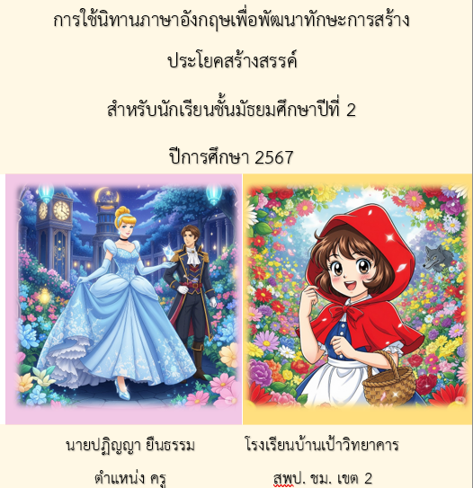

ข้อตกลงในการพัฒนางานที่เป็นประเด็นท้าทายในการพัฒนาผลลัพธ์การเรียนรู้ของผู้เรียน

1. ประเด็นท้าทาย
- การพัฒนาทักษะการแต่งประโยคภาษาอังกฤษของนักเรียนชั้นมัธยมศึกษาปีที่ 2 ผ่านนิทานภาษาอังกฤษ เพื่อให้นักเรียนสามารถสร้างประโยคได้อย่างถูกต้องและมีความคิดสร้างสรรค์มากขึ้น
2. วิธีการดำเนินการให้บรรลุผล
- ศึกษาและวิเคราะห์หลักสูตร โดยมุ่งเน้นตัวชี้วัดที่สำคัญ
- จัดทำแผนการสอนที่เหมาะสมกับระดับความรู้และความสามารถของนักเรียน
- สร้างสื่อการสอนที่สนับสนุนให้นักเรียนมีส่วนร่วมและลงมือปฏิบัติ
- ประเมินความรู้ของนักเรียนผ่านการพูดและการสังเกต
3. ผลลัพธ์การพัฒนาที่คาดหวัง
3.1 เชิงปริมาณ:
- นักเรียนชั้น ม.2 อย่างน้อย 70% สามารถพัฒนาทักษะการพูดประโยคที่เกี่ยวข้องกับภาพประกอบได้อย่างเหมาะสม
- นักเรียนชั้น ม.2 อย่างน้อย 70% มีความสามารถในการจดจำคำศัพท์เกี่ยวกับสถานที่และวลีที่มักใช้ในการแต่งนิทาน
3.2 เชิงคุณภาพ:
- นักเรียนชั้น ม.2 อย่างน้อย 70% มีคะแนนการสอบภาษาอังกฤษผ่านเกณฑ์ที่กำหนด
- นักเรียนชั้น ม.2 มีความสุขและมีความมั่นใจในการใช้ภาษาอังกฤษมากขึ้น
- นิทานที่นักเรียนสร้างขึ้นได้รับการจัดแสดงในห้องเรียนและนำไปใช้เป็นสื่อการเรียนรู้สำหรับนักเรียนรุ่นต่อไป